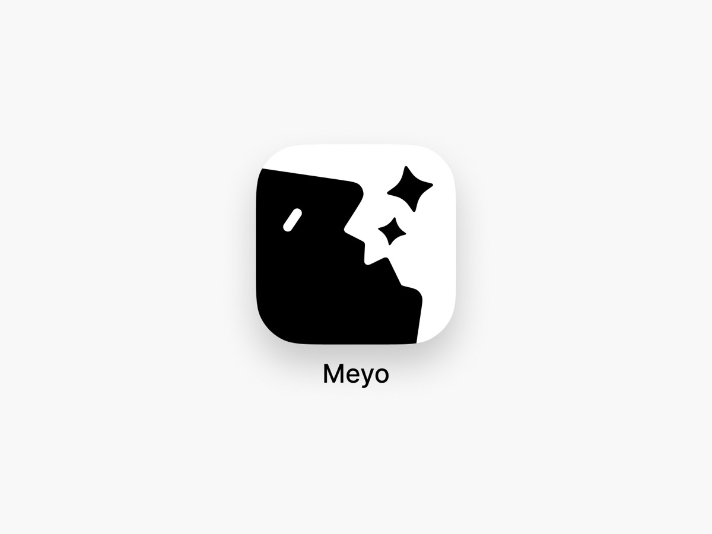
Оригинал ↗Mark · meyo
Чёрное / белое
Негативное пространство связывает две формы. Для мэпп — прорезать маршрут внутри буквы «м», сохранив один цельный силуэт.
Мудборд иконки.
Найти свой путь — и свой знак.
Буква «м» + пространство + движение.
Иконка должна быстро узнаваться на телефоне и говорить о понятном, дружелюбном сервисе для жизни в кампусе.
Самое близкое направление для мэпп: одна форма, которую можно прочитать как «м», коридор или поворот маршрута.

Оригинал ↗Негативное пространство связывает две формы. Для мэпп — прорезать маршрут внутри буквы «м», сохранив один цельный силуэт.
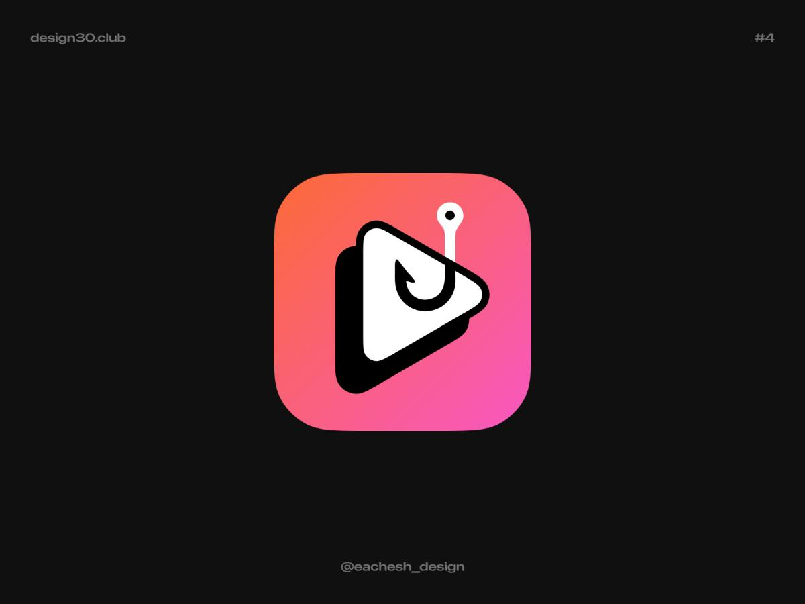
Оригинал ↗Треугольник и петля собраны в компактный символ. Для мэпп — совместить указатель направления с началом маршрута.
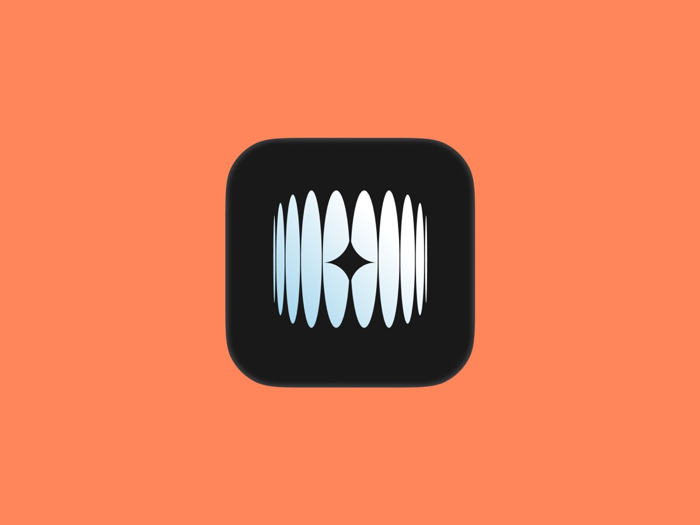
Оригинал ↗Повторяющиеся вертикальные элементы собираются в знак. Для мэпп — проверить ритм штрихов буквы «м» и план коридора; сократить число деталей.
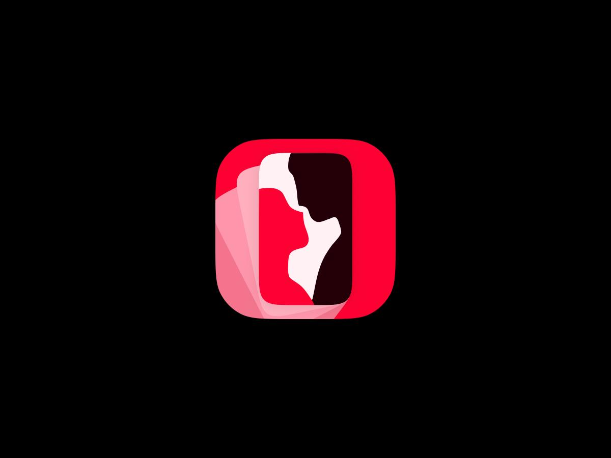
Оригинал ↗Крупная белая фигура внутри цветной рамки. Для мэпп — один проход или дверной проём, который работает как пространственная буква.
Один узнаваемый объект и уверенная цветовая пара. Хорошая основа для иконки, заметной среди других приложений.
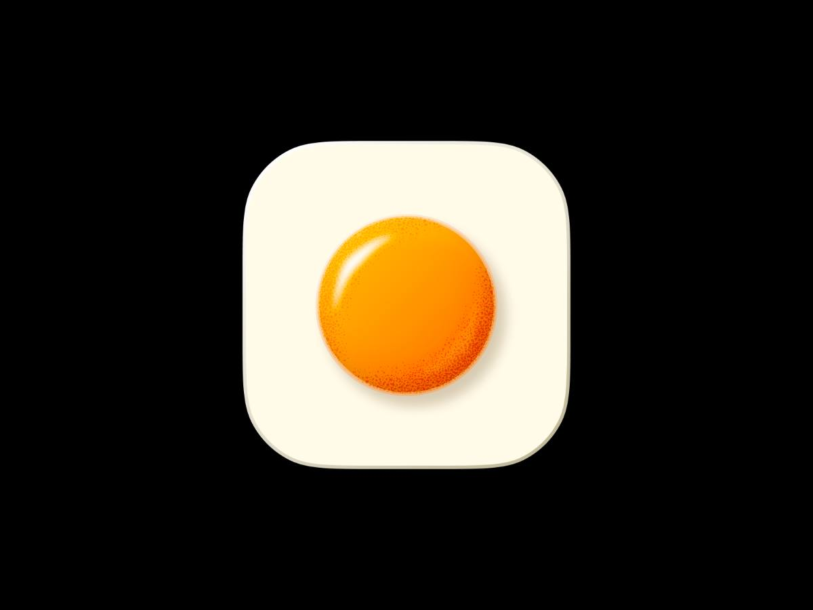
Оригинал ↗Оранжевый круг на светлой подложке. Для мэпп — точка «ты здесь» с небольшим объёмом; проверять, хватает ли уникальности без контекста.
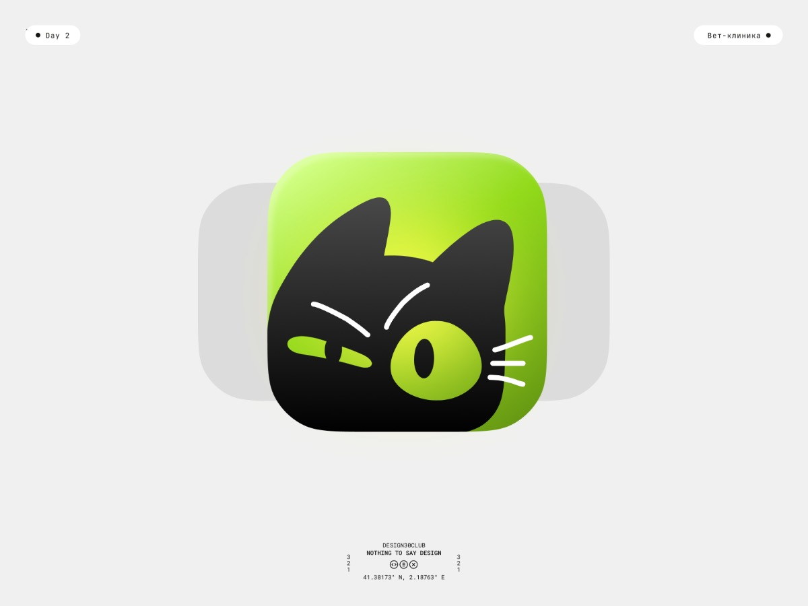
Оригинал ↗Тёмная крупная форма на лаймовом фоне. Взять соотношение фона и знака, а форму заменить собственной геометрией «м».
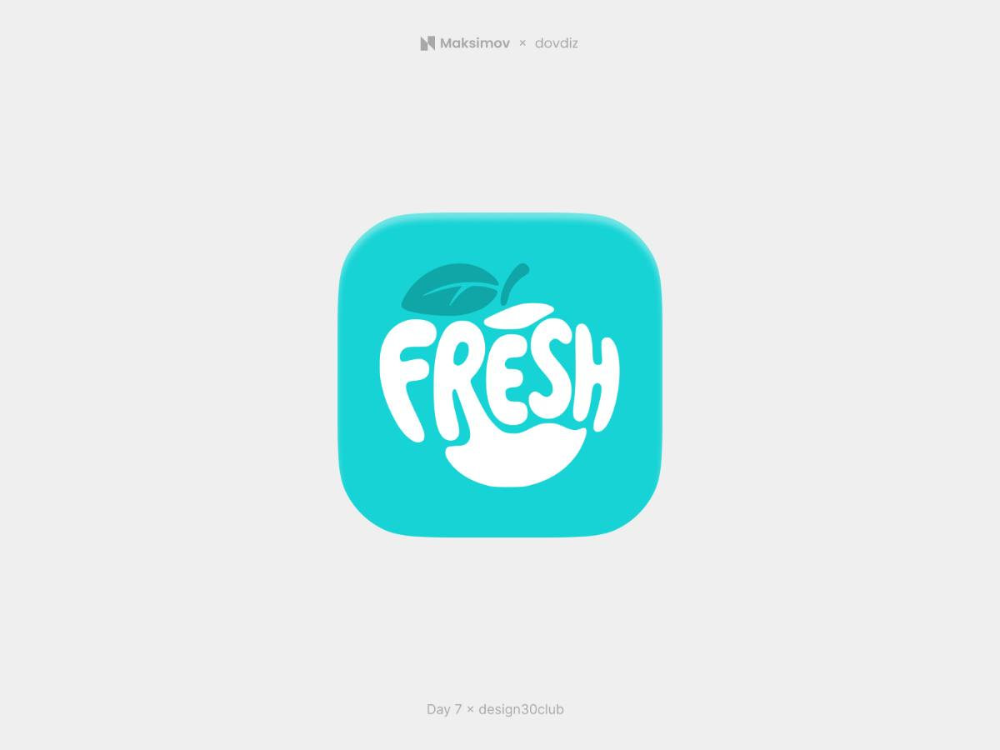
Оригинал ↗Белая надпись вписана в силуэт. Для мэпп — пробовать выразительную «м», а полное название оставить для крупных носителей.
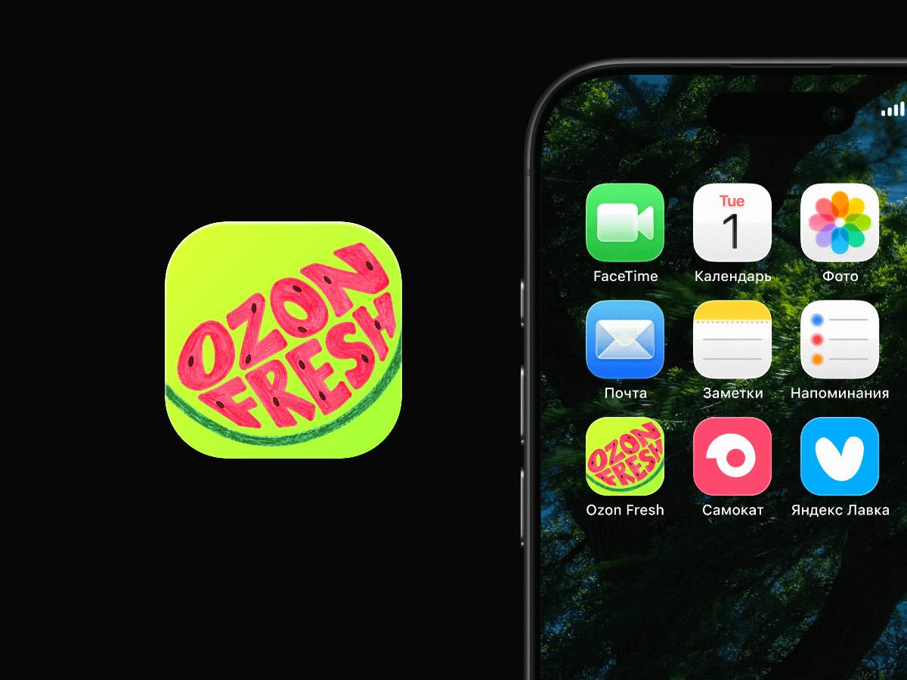
Оригинал ↗Буквы заполняют почти всю иконку. Референс для энергичного характера; для маленького размера свести композицию к одной букве.
Если мэпп должен восприниматься как помощник студента: простой персонаж, связанный с навигацией.
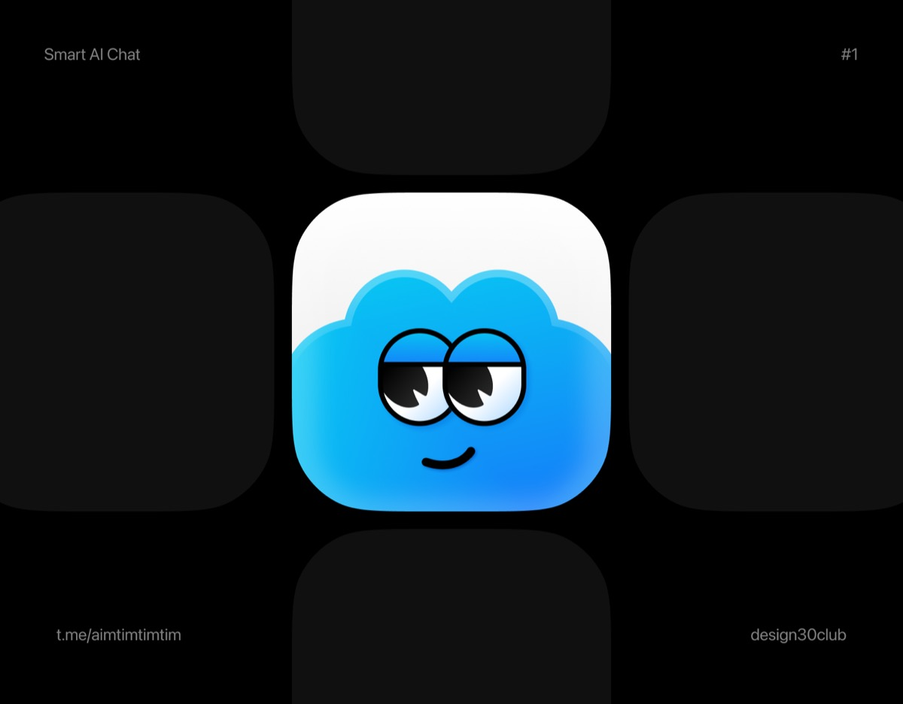
Оригинал ↗Крупные глаза и простой объём. Для мэпп — оживить точку на карте или букву «м», избегая мелких черт лица.
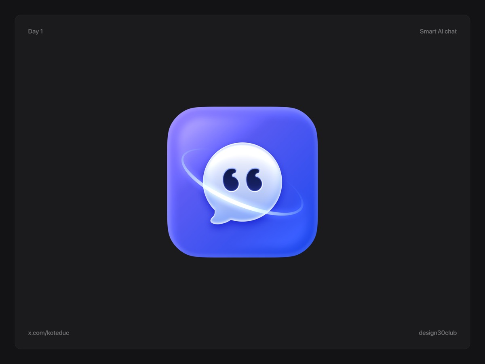
Оригинал ↗Центральный персонаж и кольцо дают ощущение движения. Для мэпп — путь вокруг точки назначения; оставить один маршрут.
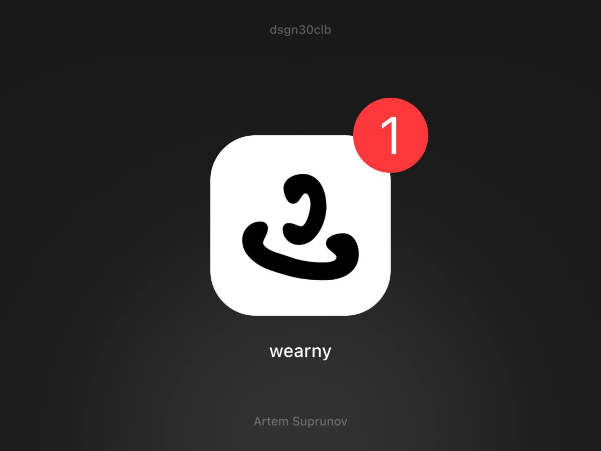
Оригинал ↗Свободный чёрный жест на белом поле. Для мэпп — маршрут, который складывается в улыбку или «м»; не переносить бейдж уведомления.
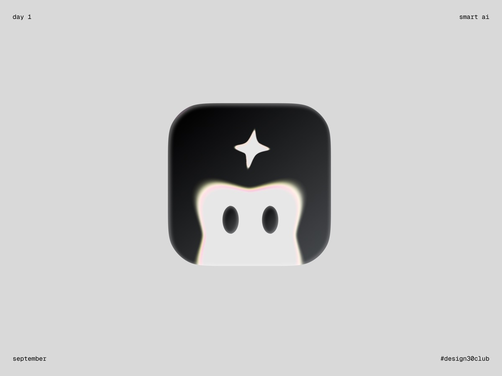
Оригинал ↗Лицо вырастает из нижнего края иконки. Для мэпп — дружелюбный силуэт из двух арок «м», без заимствования конкретного персонажа.